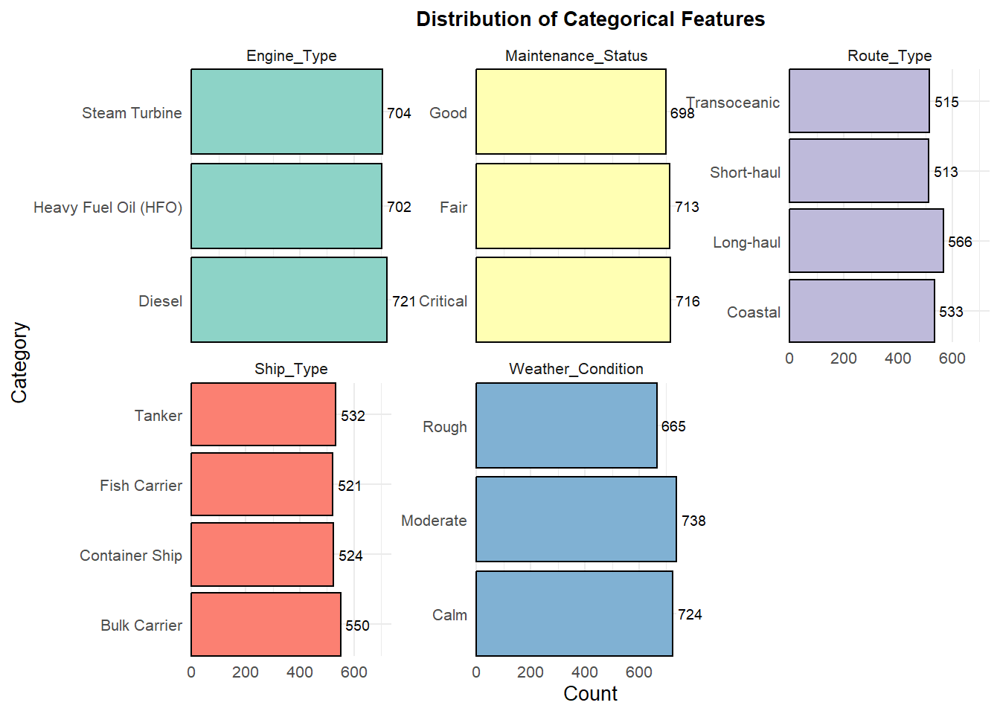
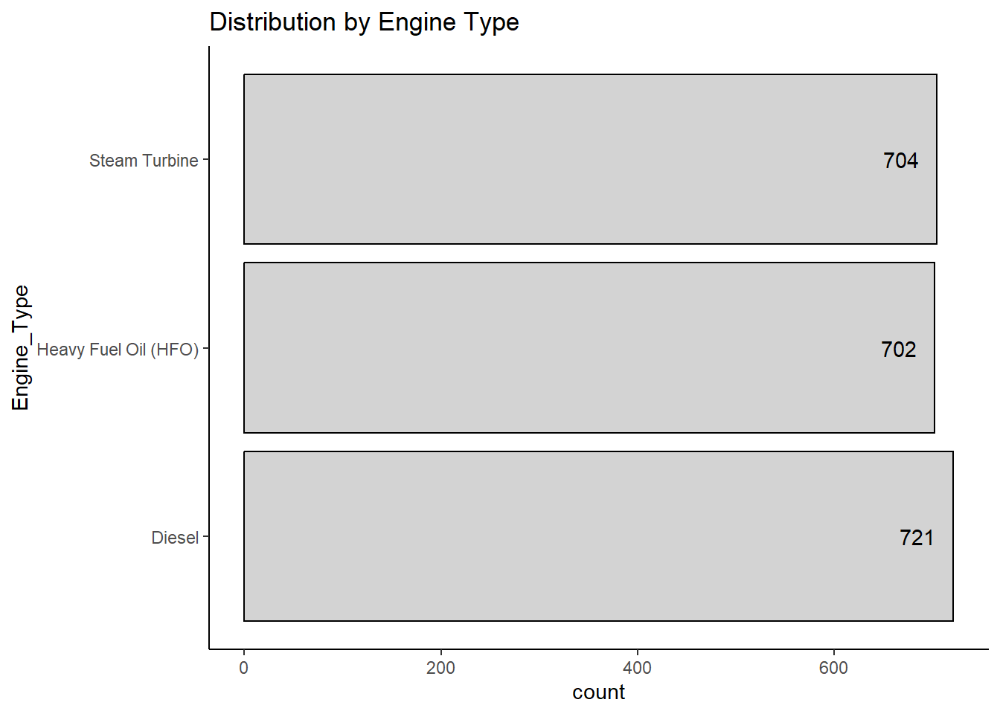
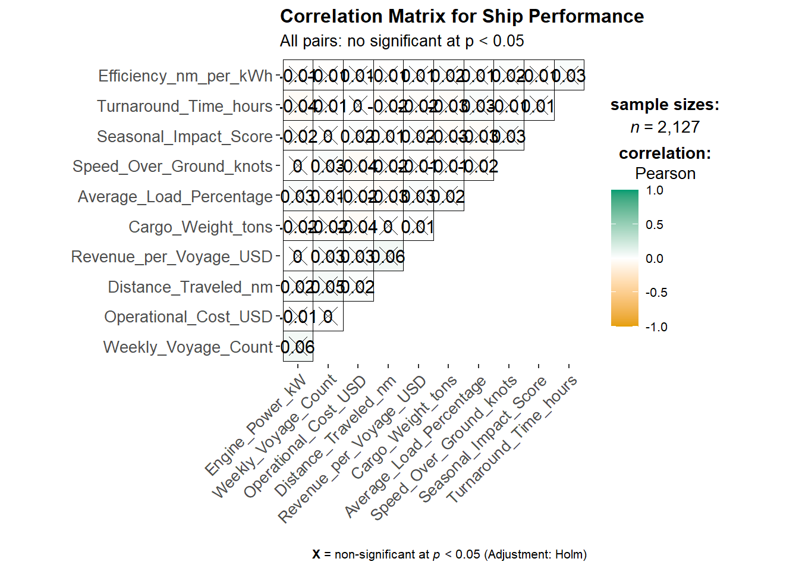

pacman::p_load(tidyverse, ggrepel, patchwork,
ggthemes, hrbrthemes,ggiraph,
gganimate, plotly, DT,
readxl, gifski, gapminder)Take-Home Exercise 1: Ship Performance in the Gulf of Guinea
1 Overview
The Gulf of Guinea is a crucial maritime hub, but ship performance is affected by environmental conditions, security risks, and regulatory factors. Strong currents, high humidity, and piracy also impact navigation, fuel efficiency, and operational costs.
Key metrics such as vessel speed, fuel consumption, turnaround time, and security-related delays play a crucial role in determining shipping efficiency. Analyzing these factors is essential for optimizing operations and enhancing maritime security in the region.
1.1 The Task
For this week’s article, we will be using various data visualisation techniques to explore the different factors affecting ship performance in the Gulf of Guinea.
1.2 The Dataset
The ship performance dataset (Kaggle) contains data on essential operational metrics and characteristics of different ship types operating in the Gulf of Guinea.
The raw dataset consists of 2736 rows and 24 columns, with some of the key features below:
Numerical Features
Speed_Over_Ground_knots: Average speed of the ship over water (in knots).
Engine_Power_kW: Engine power output (in kilowatts).
Distance_Traveled_nm: Total distance traveled by the ship (in nautical miles).
Operational_Cost_USD: Total operational cost per voyage (in USD).
Revenue_per_Voyage_USD: Revenue generated per voyage (in USD).
Efficiency_nm_per_kWh: Energy efficiency calculated in nautical miles per kilowatt-hour.
Categorical Features
Ship_Type: Type of ship (e.g., Tanker, Container Ship, Fish Carrier, Bulk Carrier).
Route_Type: Shipping route type (e.g., Short-haul, Long-haul, Transoceanic).
Engine_Type: Type of engine (e.g., Diesel, Heavy Fuel Oil).
Maintenance_Status: Maintenance condition of the ship (e.g., Fair, Critical, Good).
Weather_Condition: Prevailing weather conditions during voyages (e.g., Calm, Moderate, Rough).
2 Loading R packages and data
2.1 Loading R packages
The following code chunk is used to install necessary packages for this article:
2.2 Import Data
Importing csv data file:
ship_data <- read_csv("data/Ship_Performance_Dataset.csv")Rows: 2736 Columns: 18
── Column specification ────────────────────────────────────────────────────────
Delimiter: ","
chr (5): Ship_Type, Route_Type, Engine_Type, Maintenance_Status, Weather_C...
dbl (12): Speed_Over_Ground_knots, Engine_Power_kW, Distance_Traveled_nm, D...
date (1): Date
ℹ Use `spec()` to retrieve the full column specification for this data.
ℹ Specify the column types or set `show_col_types = FALSE` to quiet this message.3 Data Preparation
Before conducting exploratory data analysis, we must first gain a deeper understanding of the dataset and perform essential data preparation steps, including:
Verifying all data types,
Identifying duplicate records, and
Checking for missing values.
3.1 Verify Data Types
glimpse(ship_data)Rows: 2,736
Columns: 18
$ Date <date> 2023-06-04, 2023-06-11, 2023-06-18, 2023-06-2…
$ Ship_Type <chr> "Container Ship", "Fish Carrier", "Container S…
$ Route_Type <chr> "None", "Short-haul", "Long-haul", "Transocean…
$ Engine_Type <chr> "Heavy Fuel Oil (HFO)", "Steam Turbine", "Dies…
$ Maintenance_Status <chr> "Critical", "Good", "Fair", "Fair", "Fair", "F…
$ Speed_Over_Ground_knots <dbl> 12.59756, 10.38758, 20.74975, 21.05510, 13.742…
$ Engine_Power_kW <dbl> 2062.9840, 1796.0574, 1648.5567, 915.2618, 108…
$ Distance_Traveled_nm <dbl> 1030.9436, 1060.4864, 658.8741, 1126.8225, 144…
$ Draft_meters <dbl> 14.132284, 14.653083, 7.199261, 11.789063, 9.7…
$ Weather_Condition <chr> "Moderate", "Rough", "Moderate", "Moderate", "…
$ Cargo_Weight_tons <dbl> 1959.0179, 162.3947, 178.0409, 1737.3853, 260.…
$ Operational_Cost_USD <dbl> 483832.35, 483388.00, 448543.40, 261349.61, 28…
$ Revenue_per_Voyage_USD <dbl> 292183.27, 883765.79, 394018.75, 87551.38, 676…
$ Turnaround_Time_hours <dbl> 25.86708, 63.24820, 49.41815, 22.40911, 64.158…
$ Efficiency_nm_per_kWh <dbl> 1.4551789, 0.2903614, 0.4995945, 0.7029057, 1.…
$ Seasonal_Impact_Score <dbl> 1.4156533, 0.8856478, 1.4058132, 1.3707043, 0.…
$ Weekly_Voyage_Count <dbl> 1, 6, 9, 1, 8, 7, 3, 6, 8, 2, 9, 4, 3, 7, 7, 3…
$ Average_Load_Percentage <dbl> 93.76925, 93.89537, 96.21824, 66.19370, 80.008…categorical_cols <- ship_data %>%
select(where(is.character))
# Show unique values for each categorical column
unique_vals <- categorical_cols %>%
map(~ unique(.))
print(unique_vals)$Ship_Type
[1] "Container Ship" "Fish Carrier" "Bulk Carrier" "None"
[5] "Tanker"
$Route_Type
[1] "None" "Short-haul" "Long-haul" "Transoceanic" "Coastal"
$Engine_Type
[1] "Heavy Fuel Oil (HFO)" "Steam Turbine" "Diesel"
[4] "None"
$Maintenance_Status
[1] "Critical" "Good" "Fair" "None"
$Weather_Condition
[1] "Moderate" "Rough" "Calm" "None" 3.2 Identify duplicate records
duplicate <- ship_data %>%
group_by_all() %>%
filter(n()>1) %>%
ungroup()
duplicate# A tibble: 0 × 18
# ℹ 18 variables: Date <date>, Ship_Type <chr>, Route_Type <chr>,
# Engine_Type <chr>, Maintenance_Status <chr>, Speed_Over_Ground_knots <dbl>,
# Engine_Power_kW <dbl>, Distance_Traveled_nm <dbl>, Draft_meters <dbl>,
# Weather_Condition <chr>, Cargo_Weight_tons <dbl>,
# Operational_Cost_USD <dbl>, Revenue_per_Voyage_USD <dbl>,
# Turnaround_Time_hours <dbl>, Efficiency_nm_per_kWh <dbl>,
# Seasonal_Impact_Score <dbl>, Weekly_Voyage_Count <dbl>, …3.3 Check for missing values
missing_data <- is.na(ship_data)
# Filter rows where there is at least one TRUE (missing value)
missing_row <- ship_data[apply(missing_data, 1, any), ]
print(missing_row)# A tibble: 0 × 18
# ℹ 18 variables: Date <date>, Ship_Type <chr>, Route_Type <chr>,
# Engine_Type <chr>, Maintenance_Status <chr>, Speed_Over_Ground_knots <dbl>,
# Engine_Power_kW <dbl>, Distance_Traveled_nm <dbl>, Draft_meters <dbl>,
# Weather_Condition <chr>, Cargo_Weight_tons <dbl>,
# Operational_Cost_USD <dbl>, Revenue_per_Voyage_USD <dbl>,
# Turnaround_Time_hours <dbl>, Efficiency_nm_per_kWh <dbl>,
# Seasonal_Impact_Score <dbl>, Weekly_Voyage_Count <dbl>, …none_vals <- ship_data %>%
filter(if_any(where(is.character), ~ . == "None"))
print(none_vals)# A tibble: 609 × 18
Date Ship_Type Route_Type Engine_Type Maintenance_Status
<date> <chr> <chr> <chr> <chr>
1 2023-06-04 Container Ship None Heavy Fuel Oil (HFO) Critical
2 2023-07-30 None Coastal Heavy Fuel Oil (HFO) Good
3 2023-09-17 Tanker Long-haul None Good
4 2023-10-22 Container Ship None Diesel Critical
5 2023-10-29 Bulk Carrier Short-haul Diesel None
6 2023-11-05 None Coastal Heavy Fuel Oil (HFO) Good
7 2023-11-19 None Coastal Diesel Good
8 2023-12-03 None Coastal Heavy Fuel Oil (HFO) Critical
9 2024-01-14 Bulk Carrier None Heavy Fuel Oil (HFO) Critical
10 2024-03-24 Tanker None Steam Turbine Critical
# ℹ 599 more rows
# ℹ 13 more variables: Speed_Over_Ground_knots <dbl>, Engine_Power_kW <dbl>,
# Distance_Traveled_nm <dbl>, Draft_meters <dbl>, Weather_Condition <chr>,
# Cargo_Weight_tons <dbl>, Operational_Cost_USD <dbl>,
# Revenue_per_Voyage_USD <dbl>, Turnaround_Time_hours <dbl>,
# Efficiency_nm_per_kWh <dbl>, Seasonal_Impact_Score <dbl>,
# Weekly_Voyage_Count <dbl>, Average_Load_Percentage <dbl>ship_data_clean <- ship_data %>%
filter(!if_any(where(is.character), ~ . == "None"))
glimpse(ship_data_clean)Rows: 2,127
Columns: 18
$ Date <date> 2023-06-11, 2023-06-18, 2023-06-25, 2023-07-0…
$ Ship_Type <chr> "Fish Carrier", "Container Ship", "Bulk Carrie…
$ Route_Type <chr> "Short-haul", "Long-haul", "Transoceanic", "Tr…
$ Engine_Type <chr> "Steam Turbine", "Diesel", "Steam Turbine", "D…
$ Maintenance_Status <chr> "Good", "Fair", "Fair", "Fair", "Fair", "Criti…
$ Speed_Over_Ground_knots <dbl> 10.38758, 20.74975, 21.05510, 13.74278, 18.616…
$ Engine_Power_kW <dbl> 1796.0574, 1648.5567, 915.2618, 1089.7218, 217…
$ Distance_Traveled_nm <dbl> 1060.4864, 658.8741, 1126.8225, 1445.2812, 723…
$ Draft_meters <dbl> 14.653083, 7.199261, 11.789063, 9.727833, 14.9…
$ Weather_Condition <chr> "Rough", "Moderate", "Moderate", "Moderate", "…
$ Cargo_Weight_tons <dbl> 162.3947, 178.0409, 1737.3853, 260.5951, 1912.…
$ Operational_Cost_USD <dbl> 483388.00, 448543.40, 261349.61, 287718.38, 18…
$ Revenue_per_Voyage_USD <dbl> 883765.79, 394018.75, 87551.38, 676121.46, 776…
$ Turnaround_Time_hours <dbl> 63.24820, 49.41815, 22.40911, 64.15823, 47.476…
$ Efficiency_nm_per_kWh <dbl> 0.2903614, 0.4995945, 0.7029057, 1.3313431, 1.…
$ Seasonal_Impact_Score <dbl> 0.8856478, 1.4058132, 1.3707043, 0.5833834, 1.…
$ Weekly_Voyage_Count <dbl> 6, 9, 1, 8, 7, 3, 6, 2, 9, 4, 3, 7, 7, 2, 4, 3…
$ Average_Load_Percentage <dbl> 93.89537, 96.21824, 66.19370, 80.00858, 53.174…4 Exploratory Data Analysis
4.1 Univariate: Factors affecting Energy Efficiency
Code
ggplot(data=ship_data_clean,
aes(y = Efficiency_nm_per_kWh, x = Ship_Type)) +
geom_boxplot(outlier.shape = 16,
outlier.colour = "red",
outlier.size = 1) +
geom_point(stat="summary",
fun="mean",
colour="blue",
size=4) +
stat_summary(fun = "mean",
geom = "text",
aes(label = round(..y.., 2)),
colour = "darkgrey",
vjust = -1) +
labs(title = "Efficiency (nm per kWh) by Ship Type")Warning: The dot-dot notation (`..y..`) was deprecated in ggplot2 3.4.0.
ℹ Please use `after_stat(y)` instead.
Code
ggplot(data=ship_data_clean,
aes(y = Efficiency_nm_per_kWh,
x= Route_Type)) +
geom_boxplot(outlier.shape = 16,
outlier.colour = "red",
outlier.size = 1) +
geom_point(stat="summary",
fun="mean",
colour="blue",
size=4) +
stat_summary(fun = "mean",
geom = "text",
aes(label = round(..y.., 2)),
colour = "darkgrey",
vjust = -1) +
labs(title = "Efficiency (nm per kWh) by Route Type")
Code
ggplot(data=ship_data_clean,
aes(y = Efficiency_nm_per_kWh,
x= Engine_Type)) +
geom_boxplot(outlier.shape = 16,
outlier.colour = "red",
outlier.size = 1) +
geom_point(stat="summary",
fun="mean",
colour="blue",
size=4) +
stat_summary(fun = "mean",
geom = "text",
aes(label = round(..y.., 2)),
colour = "darkgrey",
vjust = -1) +
labs(title = "Efficiency (nm per kWh) by Engine Type")
Code
ggplot(data=ship_data_clean,
aes(y = Efficiency_nm_per_kWh,
x= Maintenance_Status)) +
geom_boxplot(outlier.shape = 16,
outlier.colour = "red",
outlier.size = 1) +
geom_point(stat="summary",
fun="mean",
colour="blue",
size=4) +
stat_summary(fun = "mean",
geom = "text",
aes(label = round(..y.., 2)),
colour = "darkgrey",
vjust = -1) +
labs(title = "Efficiency (nm per kWh) by Maintenance Status")
Code
ggplot(data=ship_data_clean,
aes(y = Efficiency_nm_per_kWh,
x= Weather_Condition)) +
geom_boxplot(outlier.shape = 16,
outlier.colour = "red",
outlier.size = 1) +
geom_point(stat="summary",
fun="mean",
colour="blue",
size=4) +
stat_summary(fun = "mean",
geom = "text",
aes(label = round(..y.., 2)),
colour = "darkgrey",
vjust = -1) +
labs(title = "Efficiency (nm per kWh) by Weather Condition")